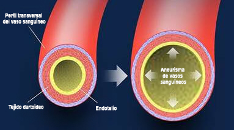

El nuevo "esteroide legal" aumenta el crecimiento de músculos un 287% - ¡los mejores entrenadores y deportistas revelan la alternativa más segura a esteroides!

(Noticias Daily Online) – Desde los principios del año pasado nuestros lectores se vuelven locos con el nuevo 'esteroide legal', que pasó por el país, y ayudó a los hombres de todas las clases sociales a transformar su cuerpo rápido y de forma segura. Este producto resultó tener tanto éxito que muchos entrenadores y deportistas profesionales ahora desean que lo prohíban.
Lo culpan de hacer a la gente ganar la masa muscular demasiado rápido y, aunque ha sido clínicamente comprobado que el mismo es seguro y no tiene ningún efecto secundario peligroso de los verdaderos esteroides.
¡Los hombres de todo el país usan esta alternativa a esteroides para ganar más de 1 kg de músculos al mes!
Hace poco informaron por la tele de este producto, y desde aquel entonces recibimos a diario 1000 mensajes de nuestros lectores que nos reclaman más información y preguntan cómo pueden recibir personalmente este nuevo complemento alimentario para ganar los músculos. Parece mentira, pero muchos hombres que a diario afrontan los retos de su cuerpo, aún no han oído hablar de este remedio potente.
Los entrenadores llaman este nuevo complemento "una alternativa natural a esteróides" que permite ganar los músculos y mejorar el deseo sexual.
En las entrevistas privadas HR365 los famosos de cine de Hollywood dicen que la ventaja de este fármaco es la siguiente: les ayudó a ganar músculos y la masa muscular para prepararse a actuar en el cine. Decenas de otras personas famosas transformaron su cuerpo con este fármaco que provoca disputas. Hasta los deportistas profesionales participaron en la campaña para ganar los músculos y usaron el mismo producto para la transformación física cardenal.
El producto de que hablamos se llama FortuMax. Es posible que Vd. lo haya visto en las noticias, por la tele o en Internet como “una herramienta secreta e ingeniosa” que usan las modelos, los famosos y la gente ordinaria en toda España. El ingrediente básico es el citrato de cinco, un compuesto poco frecuente usado por el cuerpo para ganar los músculos rápido. El citrato de cinco se convierte en óxido de nitrógeno (NO), que provoca la vasodilatación de los vasos sanguíneos. En otras palabras, aumenta de forma brusca el volumen de sustancias nutritivas que pueden ser dirigidas a sus músculos. El alto contenido de citrato de cinco y otras propiedades de Fortumax que provocan el crecimiento de la masa muscular lo convierten en una herramienta potente para transformar Su cuerpo.
Véase más abajo: Un compuesto poco frecuente de citrato de cinco se convierte en oxido de nitrógeno (NO) que dilata los vasos sanguíneos y aumenta el volumen de las sustancias nutritivas que reciben los músculos.
FortuMax es tan eficaz que Vd. Entenderá por qué vale la pena mencionar un informe especial. Pero, posiblemente, lo más importante es que se puede adquirir Fortumax SIN prescripción médica.

Fue clínicamente comprobado que los ingredientes que forman parte de FortuMax provocan el crecimiento de los músculos sin dietas y ejercicios físicos.
Según los médicos que realizaron la investigación clínica, este conjunto funciona de más de un modo: "El primero modo – el mismo penetra dentro y hace que los vasos sanguíneos de los músculos se ensanchan y se dilatan...
El segundo modo, el más importante – el mismo aumenta el nivel natural de testosterona y mejora la capacidad de generar la masa muscular seca. De esta forma, ahora en el flujo sanguíneo se aumenta el volumen de testosterona, lo cual ayuda a ganar la masa muscular más rápido. Vd. tiene un efecto sinergético, y al mismo tiempo se aumenta la producción de los nuevos músculos. Pero es totalmente natural y seguro"
Un Blogger de Ciudad Real transformó su cuerpo solo en 9 semanas, al haber usado FortuMax.
Si de momento Vd. tiene dudas, lo mismo se refiere a otras personas. Durante los últimos 18 años en HR365 hemos visto muchos productos prometedores que aparecían y desaparecían. Cuando por primera vez nos enteramos de “otro” producto para ganar la masa muscular, nuestro radar de información funcionó enseguida. Hasta al haber hojeado grandes volúmenes de investigaciones... tuve opinión comprobada. Pero aún no tuve comprobaciones personales de que FortuMax vale el tiempo gastado. Por lo tanto, con permiso de mi redactor, decidí probar este producto. ¿Qué puede ser mejor que una investigación personal para enterarse de la verdad?
Sabemos que el pensamiento sobre ser esbelto y ganar los músculos frecuentemente nos parece una tarea difícil de realizar. Hemos analizado múltiples programas para ganar la masa muscular, y parece que todos son muy exigentes o no funcionan igual que deberían. La causa del fracaso de la mayoría de los programas es que los mismas provocan restricciones imposibles para Su vida diaria.

"Es espectacular. No puedo creerlo, vi los resultados tan rápido. ¡Los resultados reales! Literalmente vi los resultados después del primer día. Les estoy muy agradecido."
A pesar de nuestras dudas sobre FortuMax, las historias infinitas de éxito recibidas en nuestra oficina demostraron que los hombres ordinarios de todo el mundo pudieron alcanzar modificaciones increíbles de su cuerpo sin cambios radicales. Estas personas vieron los resultados sin necesidad de cambiar bastante su modo de vivir o hábitos alimenticios.
En este informe especial cuento cómo hice las pruebas del producto, y le demuestro los resultados asombrosos que logré. Hoy día revelo un secreto de lo que nosotros, el personal de HR365, llamamos "posiblemente el producto más eficaz para transformar el cuerpo de hombres en el mundo ". Le demostrare como Vd. también puede tener cuerpo esbelto y con músculos de forma rápida y segura, sin usar los fármacos prohibidos y sin pagar 1000 EUR por los complementos.
Las ventajas de FortuMax clínicamente comprobadas:
- Aumento del nivel natural de testosterona un 140%
- Aumento del flujo de sangre al tejido muscular
- Aumento se síntesis de proteínas
- Posibilidad de deshacerse de la imagen de una persona hinchada, regordeta.
Decidí ir más lejos, visité el sitio web de Fortumax y pedí un curso mensual de las gotas.
Mi paquete fue entregado en 3 días.
Tuve que cumplir con el modo de tomar los complementos durante 4 semanas y documentar mi progresa en proceso.
Los resultados asombraron a todos en HR365 (a mí también)...
Primera semana:
Después de 1 semana de tomar el producto del nuevo programa, me asombré por el resultado rápido y significante. Mi nivel de energía aumentó, ya no me sentí tan hambriento como antes. Es un efecto secundario placentero. El curso de gotas de un mes y sus capacidades de quitar el apetito. A decir verdad, me sentí de forma fantástica, y no tuve que cambiar nada en mi rutina diaria.
Al día 7 me pesé (usé la nueva báscula digital que mide el contenido de músculos) y no puede creerlo - gané 1,3 kg de masa muscular. Pero aún no estaba totalmente convencido. Dicen que al principio de algunos programas musculares uno pierde mucha agua y gana mucha masa muscular. Quería ver si gano el mismo volumen de músculos en las próximas semanas. Pero todo fue muy bien.
Segunda semana:
A las dos semanas de tomar el complemento, tuve más energía, dormía mejor que antes. No me despertaba por la noche y no me movía en la cama porque mi cuerpo pudo relajarse (creo que es un resultado de propiedades detox del complemento). También conseguí perder el peso, 6 kg increíbles solo en 2 semanas. También sentí haber ganado 6 abdominales marcados, lo cual le gustó mucho a mi chica. Sí, es así.
En aquel momento empecé a creer más que todos estos productos para los músculos no es solamente un truco.
Tercera semana:

A las 3 semanas todas mis preguntas y dudas desaparecieron. Gané casi 2 kg de masa muscular pura y mi cuerpo ya se veía mucho más firme. Toda la grasa a ambos lados de mi vientre desapareció totalmente. Mi abdomen tuvo tanto relieve que finalmente aparecieron 6 abdominales. Este producto es realmente asombroso. El crecimiento de músculos es INCREÍBLE.
Seguía con mucha energía. Normalmente a la tercera semana de otras dietas uno empieza a perder el ritmo. Pero con FortuMax mi nivel de energía no cayó. Al revés, siguió siendo estable durante todo el día. Noté que mi estómago digería mejor la comida, no hay hinchazón ni gases desagradables después de comer.
Cuarta semana:

Después de la cuarta semana, estaba totalmente asombrado por mis resultados. Desde el principio, al tomar FortuMax gané 4 kg increíbles de la masa muscular. Ahora todos en HR365 desean probar esta dieta. Estaba seguro de sí mismo y preparado para las competiciones de fitness. Seguramente voy a continuar tomando FortuMax porque el mismo da resultados estables, asombrosos y contiene tantos otros compuestos que ayudan a generar la masa muscular y mantener la masa.
"No puedo estar más contento con los resultados. Gané 4 kg de masa muscular en 4 semanas. ¡Sin dieta especial, sin ejercicios intensivos!"

Si aún tiene dudas sobre las ventajas asombrosas de FortuMax para ganar los músculos, le recomendamos probarlo. A partir de mi propio test que realicé puede asegurarse de que los resultados son reales. Gané 4 kg de masa muscular seca solo en 4 semanas. Sin dieta especial ni ejercicios físicos. Además, cambió mi cuerpo, y la alimentación, nunca tuve hambre durante el día. El equipo de HR365 al principio tenía dudas, pero luego cambió de opinión rápido. Al haber realizado las investigaciones propias, estamos contentos de ver que los hombres en todo el mundo tienen éxito al aplicar este nuevo producto revolucionario para ganar los músculos.
IMPORTANTE: *Durante las pruebas clínicas fue comprobado que para tener los resultados similares hay que tomar Fortumax a diario.
FortuMax desea que todos nuestros lectores tengan la posibilidad de probar este nuevo fármaco para ganar los músculos. ¡Ofrecen una promoción restringida! Pro hay que actuar rápido, la promoción finaliza el .. . ¡Una vez recibido el frasco, infórmenos sobre Sus impresiones en la sección de comentarios en la parte inferior de este artículo.


Mis amigos y yo esperábamos que apareciera un fármaco para ganar la masa muscular Fortumax. Por lo menos, 5 de nosotros tomaban este complemento, y todos ganamos la masa muscular seria. Este producto es realmente increíble y cambió nuestras vidas. Suerte a todos los que usarán esta posibilidad milagrosa.
Suena realmente guay. Gracias por haber compartido su experiencia, ahora veo que debo probarlo.
Juan, vi este producto en programas de tele. Pero no sabía cómo pedirlo, y encontré Su sitio web donde Vd. localizó las entregas EXCLUSIVAS DE PROMOCIÓN, lo cual es guay, porque no deseo pagar caro por algo que no sé cómo funciona. Actualmente llevo 2 meses tomando este producto y debo confesar que funciona, y mis resultados son increíbles. Muchas gracias por haber publicado este artículo y haber hecho la prueba. ¡Gracias por la información!
Llevo 2 meses aplazando mis actividades para estar en forma, y hoy día voy a empezar a actuar. Pedí un curso mensual y voy a hacer los ejercicios de 30 minutos ahora mismo. ¡Gracias a HR365 por la motivación que me animó!!
Mi mujer y yo tenemos que volver a estar en forma, y deseo mucho ganar la masa muscular. Ya lo pedí y ambos vamos a probarlo. Gracias.
Gracias, Juan, he visto un reportaje por la tele y entendí que Fortumax FUNCIONA AÚN MEJOR PARA LOS HOMBRES que desean estar esbeltos. Seguramente voy a probar las ofertas especiales antes de que se expire. Gracias por haber compartido los consejos. ¡Estoy encantado!
Estos días se habla mucho de Fortumax. Veo Fortumax en todas partes... Entregaban las muestras exclusivas del producto en las tiendas locales. Voy a hacer pruebas del complemento Fortumax. ¡Gracias por los descuentos, hermano!
Mi hermano tenía problemas para ganar los músculos desde niño, y el médico dijo a mis padres que deberían convencerle para que se entrenara. Espero que sea una respuesta correcta. Gracias a HR365
¿Cómo funciona este remedio para los chicos? Me gustaría tener mejor aspecto sin camisa. Ya pedí este producto.
Chaval, te lo digo en serio, ya llevo 2 meses usando este producto y resultados son realmente maravillosos. Hasta no trabajé mucho con mi dieta, pero tuve tono importante. Recomiendo probarlo.
¡Muchas gracias! Creo que lo intentaré, con esta oferta no tengo nada que perder.
Estoy muy contento por la investigación que realizaron, porque la mayoría de los productos solo engañan. Pedí la marca recomendada en este artículo y no veo la hora para probarlo.
También veo Fortumax por todos lados. Hasta recuerdo a mi amigo contar hacer varios días sobre este complemento para los músculos, porque uno de sus amigos ganó 5 kg de músculos en los primeros 15 días. Definitivamente debo probarlo, gracias, chaval.
¡Estoy asombrado! Por fin, una dieta que inspira. He pedido las gotas y voy a dar comentarios.
¡Este remedio es milagroso! Mi mejor amigo Juan tomó Fortumax Y perdió mucho peso… no me lo pude creer y tuve que hacer algunas investigaciones, y así encontré este artículo en las noticias. No puedo creer que ofrecen tantos descuentos. Sé que Juan gastó unos 100 EUR y estaba encantado. Imagine cómo estará contento si eso vale 3 veces menos. No parece real, ¡muchas gracias!
Ya estoy practicando deporte, por lo tanto, creo que esta pequeña ayuda servirá, es una oportunidad perfecta para probar.
Mi amigo tomó Fortumax Y me lo recomendó hace 3 semanas. Lo pedí y lo recibí en 3 días. Los resultados eran increíbles, y no veo la hora de enterarme de los resultados de 3 y 4 semanas.
Acabo de pedir Fortumax Con un descuento. Informaré sobre los resultados.
recomiendo Fortumax. Probé esta dieta hace unos meses y solo puedo informar de los resultados positivos. Eesta combinación me ayudó a ganar 2 kg de músculos y cambió mi vida totalmente (siempre estaba flaco). Recomiendo esta dieta a CUALQIERA que desee ganar rápido la masa muscular.
Pedí un curso hace varias semanas, y el servicio a clientes en esta empresa es perfecto. Seguiré comprando con ellos... y sí, Fortumax Funciona, es un milagro :)
Gracias a Juan y HR365 por un reportaje sobre este producto para ganar la masa muscular. Vi la publicidad en todas partes, pero no tuve coraje para probarlo hasta ahora. Gracias.